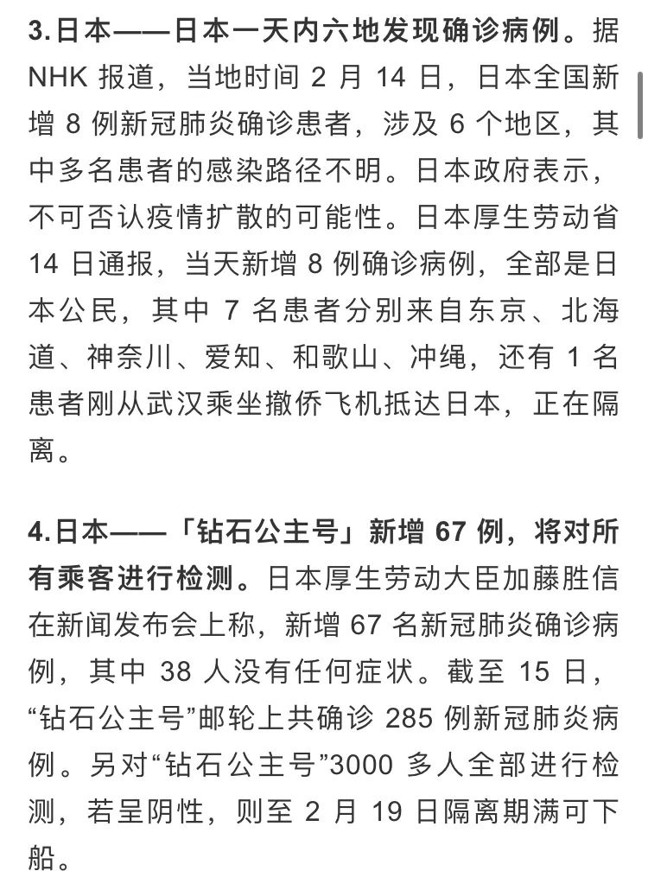
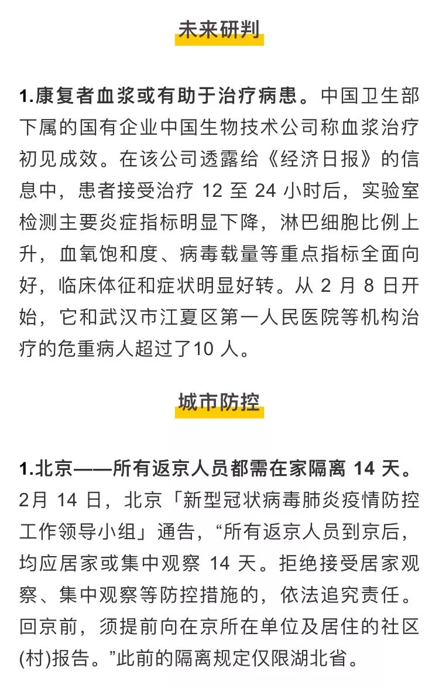
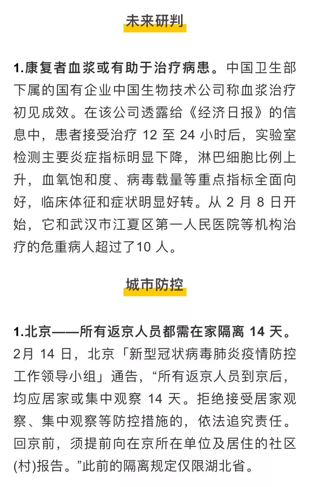
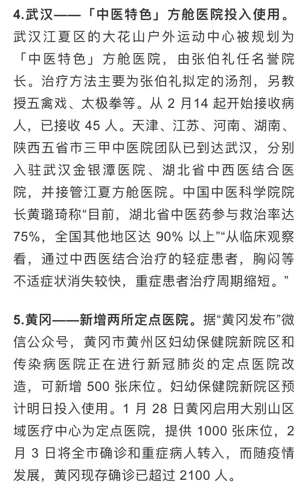
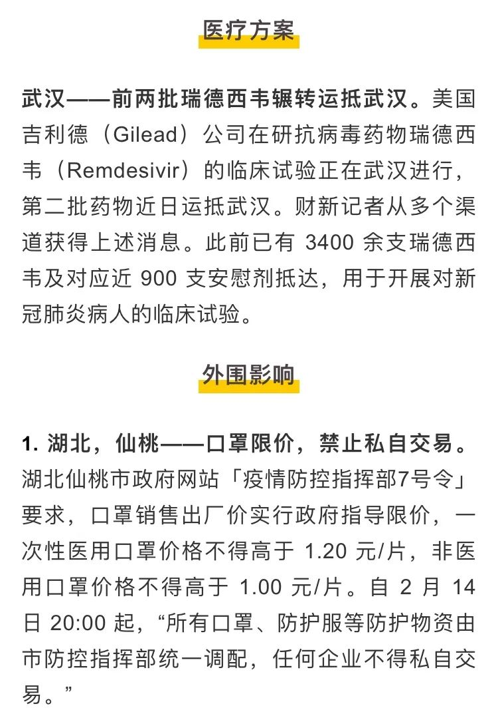
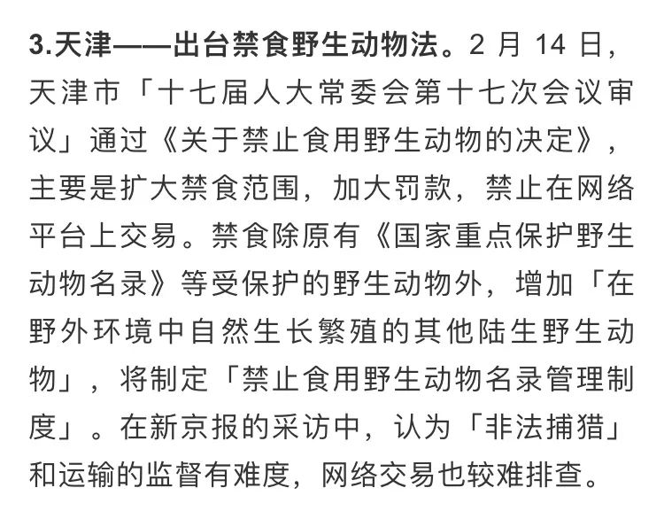

全国 1716 名医务人员感染新冠，新冠病毒可能在其他国家“蓄势以待”，以及其他 29 条疫情新闻
原文链接 备份链接 所有的鱼现在同步在 allthefishnews.wordpress.com 更新。wordpress 页面中，可以通过电子邮件订阅。复制上方链接浏览器打开或点击 阅读原文 可获取订阅链接。 根据丁香医生实时数据， …
所有的鱼现在同步在 allthefishnews.wordpress.com 更新并可通过邮件订阅。你可以复制上方链接浏览器打开或点击 阅读原文 获取订阅链接。

根据丁香医生实时数据，截至 2020 年 2 月 15 日 19 时，全国累计确诊病例 66580 例，现存确诊病例 56643 例，现存疑似病例 8969 例，新增现存确诊病例 820 例，新增累计确诊病例 2648 例，新增疑似病例 2277 例。其中，重症病例11053 例，死亡病例 1542 例，治愈病例 8413 例。


 









文中所有新闻和消息来源可通过下方链接查看：https://docs.google.com/document/d/1QLjWWTfJ0LJLHo09PJqp21_jHssUJKs1ir8Cin232MA/edit?usp=sharing 《新型冠状病毒肺炎每日疫情播报 2.15》，可复制链接后科6学6上网打开
原文链接 备份链接 所有的鱼现在同步在 allthefishnews.wordpress.com 更新。wordpress 页面中，可以通过电子邮件订阅。复制上方链接浏览器打开或点击 阅读原文 可获取订阅链接。 根据丁香医生实时数据， …
原文链接 备份链接 根据丁香医生实时数据，截至 2020 年 2 月 12 日 18 时，全国累计确诊病例 44763 例，疑似病例16067 例，新增确诊病例 2055 例，新增疑似病例 3324 例。其中，重症病例 8204 例，死亡 …
原文链接 备份链接 文 |《财经》数据研究员 徐进 图 |《财经》视觉中心 编辑 | 谢丽容 1. 全国累计新增确诊病例 图1 由图可见，国内非湖北地区正趋于平缓。 2. 新增病例：国内非湖北地区继续坚定下降，有望近日归零 图2 国内 …
原文链接 备份链接 【财新网】（记者 丁捷 综合）全国新冠肺炎现有疑似病例首次出现下降，2月9日一天内全国累计“消化”疑似病例9361例，其中湖北省为7472例，这也与疑似病例检测的速度加快有关，但“消化”的疑似患者去了哪里，是否全部进 …
原文链接 备份链接 【财新网】（记者 曹文姣 曾凌轲）统计口径调整后武汉新增冠状病毒感染确诊人数连续两日暴涨，而省内其他城市走向出现分化。 2月12日湖北省新增新冠肺炎确诊1.48万例，2月13日，再新增4823例，其中武汉3910 …